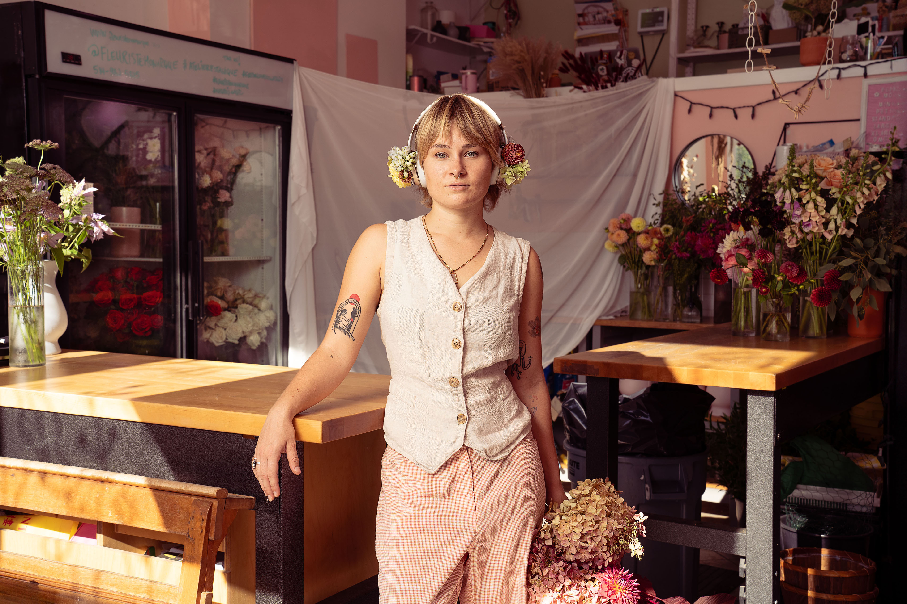
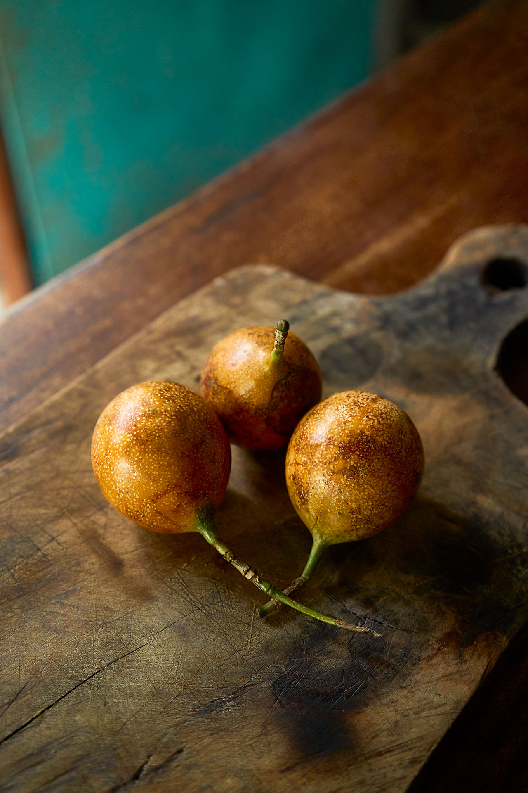
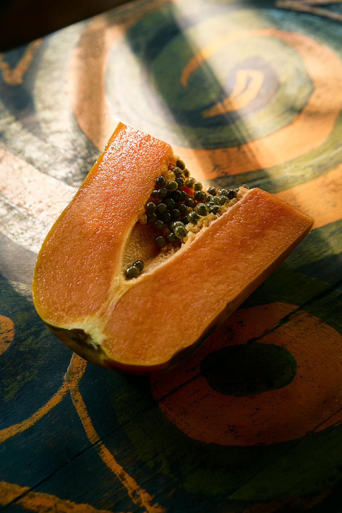

Welcome
Recent work
An exploration of impermanence and our relationship to ageing, with a focus on the moment we first notice subtle shifts showing the transition from youth into maturity. Using nature as the backdrop to showcase how we are all a part of this natural process, I aimed to capture varied sentiments that people carry with them during this phase, ranging from fear and uncertainty to peace and strength.

